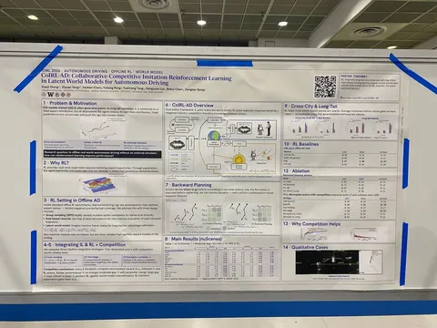
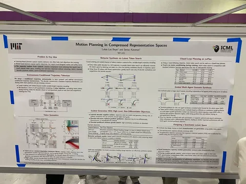
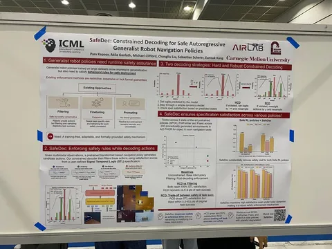

Продолжаем рассказ о тематических работах на крупнейшей международной конференции по машинному обучению. Впечателниями делится наш коллега из команды автономного транспорта Иван Дубровин.
CoIRL-AD: Collaborative-Competitive Imitation-Reinforcement Learning in Latent World Models for Autonomous Driving
Авторы пытаются решить главную проблему imitation learning — выход модели в out of distribution под накапливающимся влиянием расхождений предсказанных и GT-траекторий. Предлагают решать это через объединение IL и RL, чтобы добавить в обучение exploration и расширить распределение, которое модель видела на обучении, что само по себе не новая идея.
Реализуют с помощью collaborative-competitive-сетапа. IL и RL политики — это две разные модели, которые обучаются параллельно и раз в какое-то количество шагов «соревнуются» на валидационном сете. Веса проигравшего заменяются на линейную комбинацию с весами победителя, и обучение продолжается. Выходы обеих моделей также используются для обучения latent world model, которая нужна для скоринга действий RL-агента.
RL при этом не совсем настоящий, потому что использует GT. В качестве реворда — произведение L2-отклонения от GT-траектории, умноженное на collision score. Это же произведение используют как главную метрику.
Замеры, судя по всему, только в OL.
Motion Planning in Compressed Representation Spaces
Авторы сводят задачу guided-планирования к жадному поиску по квантизированным латентным токенам:
• Обучают токенизатор траекторий, обусловленный на окружение, с reconstruction-лоссом.
• Поверх выходов энкодера делают софт-квантизацию, из чего получают набор латентных токенов.
• К латетным токенам применяют nested dropout — случайно отбрасывают хвосты случайной длины, чтобы форсить coarse-to-fine иерархическую структуру. В таком случае каждый префикс декодируется в полную траекторию, и можно делать жадный поиск.
На постере — пример получения траектории левого поворота из найденных жадно трёх токенов. В качестве критерия поиска используют максимизацию суммарного изменения heading влево.
У токенов получается фиксированная семантика, которая переносится в разные ситуации. Любая последовательность токенов декодируется в валидную тракеторию. В частности, команда поворота влево не будет работать, если поворота налево нет.
SafeDec: Constrained Decoding for Safe Autoregressive Generalist Robot Navigation Policies
Авторы заносят контур безопасности на этап декодирования траектории. Используя Signal Temporal Logic (формальный язык для описания требований к сигналам), руками задают правила, которым должны соответствовать траектории.
Для каждого следующего токена результирующая траектория проверяется на соответствие правилам. Если есть нарушение, то токен, который приведёт к невалидному стейту, полностью маскируется (hard constained decoding). Или перевзвешивается распределение (robust constrained decoding).
HCD помогает обеспечить 100% безопасность, но иногда приводит к отсутствию валидных токенов и снижает success rate. RCD даёт трейд-офф между соблюдением STL и успехом.
#YaICML2026
404 driver not found


